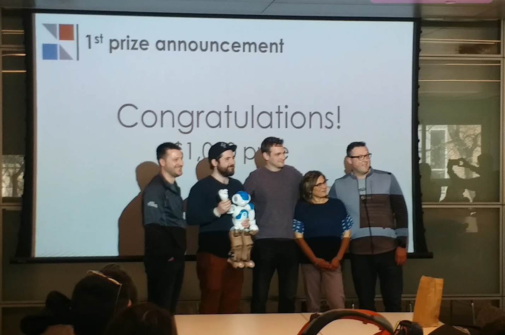

Projects/Media
ISARC Constructing Futures Hackathon
Competed and won first place in the 2019 ISARC Constructing Futures 24 Hour Hackathon. I added a cloud based image classifer layer to a VR robotic control platform that I had previously created.
Interview with New Trail Magazine
Spoke with New Trial Magazine about the Bento Arm, the BLINC Lab's open source prosthetic training and testing platform.
HumanMachine
Created and operated the Nao Robot control interface used for an AI powered improv show in the 2018 Edmonton Fringe festival. Performed alongside Kory Mathewson + Piotr Mirowski.
Artificial intelligence put to the test during Edmonton Fringe Festival show - Global News

Frick I Love Nature
Was a production assistant and b-roll camera man for select segments of a couple of episodes of Frick I Love Nature. This was completely unrelated to any tech stuff, but was an absolute blast.
Amazing Animals in the Rocky Mountains - Mountain Goats, Lichen and Pikas - Frick I Love Nature